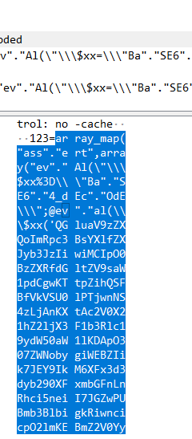

HPUCTF wp
一.web
故障艺术
进入靶机，查看网页源码，从注释中获取flag
GET
进入靶机环境，通过提示，用get方式对HPU赋值air-conditioning,传参后跳转页面获得flag
本地查看
使用burpsuit，拦截请求get请求，在请求头中添加参数X-Forwarded-For：127.0.0.1，表示来自本地访问
POST
使用hackbar，用post方式传参，password=123456（很容易猜中）
到底是不是数字？
分析php代码，意为num必须为数字但不能被判断为数字类型，在数字后加上字母来进行绕过。
filter
为p赋值为flag，被过滤不能直接访问，故使用php://filter协议实行绕过操作
ctf大卖场
登录界面使用万能密码进行绕过，然后点击购买，用burpsuite拦截请求，有cost和goods两个参数，当goods
== 1时，无论cost为多少，都会显示金钱不足，于是设置goods =
2或者3，再将cost改为负数，一直发送请求赚钱，赚两次购买flag
easysql
1,判断回显位置，先把id=1改为-1防止回显位置被占住，然后用union
select1,2,3…去寻找回显位置
- 爆库名 select1,2,group_concat(schema_name) from
information_schema.schemata–+
3.查找note库中有哪些表：select 1,2,group_concat(table_name) from
information_schema.tables where table_schema=’note’ –+

4.同样，段名： select concat(column_name) from information_schema.columns where
table_name=’fl4g’–+
5.然后 union select fllllag from fl4g–+
babysql
进入环境，先登录，访问login.php。
进入burpsuite抓包
发现有布尔注入漏洞，如下图，可通过and语句和回显判断语句是否为真，所以想到使用脚本来进行爆破
爆破脚本：
二.逆向
babyre
拖进ida，shift+f12查找字符串能直接看见flag
三.MISC
签到题：进群
png隐写
思路：进010调高度
河南理工大学校徽
binwalk扫描，改后缀为zip，然后解压。
二维码拖进ps或者sai2，找到违和感很强的那条错位线，使其右半部分框选住顺时针旋转180
扫描出的结果用base16解码，打开压缩包后，ppt文件用爆破工具进行爆破，再找到ppt最后一页，ctrl+a全选改文字颜色为醒目色。
I wanna be the guy
应该可以弄进od里然后跳关，但我是直接闯过去的
音频隐写
拖进Audacity里看频谱图
最美奋斗者
用binwalk扫描发现有zip文件，可以用工具分离，也可以用010editor把png的部分删掉，就可以进行爆破了（位数确实没想到）
解一次伪加密
继续根据提示爆破
可以进行明文攻击
png更改高度，尽量改动大点，能看见右下角有二维码。扫码后得出flag
流量分析1
数据包使用wireshark打开，ctrl+f查找字符串，查找flag即可
流量分析2
数据包使用wireshark打开，在filter中输入udp，跟踪UDP流，耐心翻看流的数据，会在中间发现一串数字，因为数据文件是16.pcapng，所以联想到16进制数据，转ascii后得到了flag
流量分析3
追踪TCP流，发现了题目剧情中的提示
于是搜索hnt.txt
在一个结果的追踪流中发现了html编码
解码后，获得了flag
流量分析4
过滤发起POST请求的包
三个POST包都上传了base64加密的参数，导出分组字节流，对其进行解密，可以看出攻击者上传的木马程序
又在追踪TCP流的时候发现返回了这样的一段数据
![]10141028/11.png)
分析木马代码并结合这段数据，导出字节流以后删掉首尾的X@Y就应该是flag.tar.gz的数据流，于是保存这段数据后解压得到了flag.txt
四.crypto
morse
莫斯密码，可以用工具直接解出来
莫斯密码？
敲击码，对照可得出flag
KeyBoard
键盘密码，可以看出，每组是围成了一个圈的（在键盘上可看出来），密文就是圈内的内容。解出来就是flag
babyRSA
用工具，我使用的是RsaCtfTool脚本，enc后面的内容作为—uncipher内容输入
解出后获得flag
没有羊排
打开后全是otoot，可以怀疑是二进制，但是根据题目提示，更可能是培根密码，所以，将o和t转为a或b，两种情况下尝试后于解密网站上解密后得出flag
Caesar
caesar是凯撒的英文，所以，先将密文字符串转化为ascii编号，然后前四个在ascii编码上分别+8
+9 +10 +11就对应了flag，于是可以写出解码脚本：